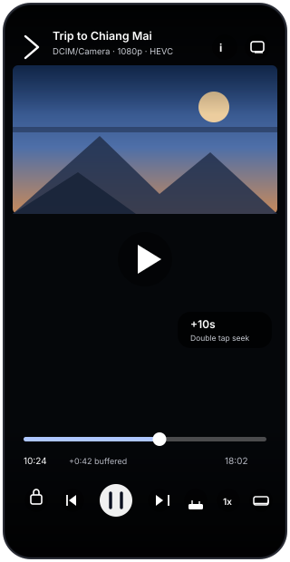
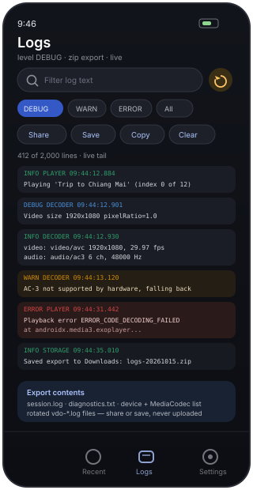

What it does
VDO Player is a local file video player for Android. It reads the videos already on the device, plays them with the phone's hardware decoders first and bundled FFmpeg decoders as a fallback, and keeps a detailed log for when a file still will not play. There is no account and no streaming. It can also move a file from one phone to another over your own Wi-Fi, so getting a video onto the device that will play it needs no cable and no cloud account.
Library
- MediaStore scan that refreshes live while the app is open
- Thumbnails decoded from the video frames themselves
- Search across titles and folders, folder filter chips
- Sort by date, name, duration or size · grid (1–4 columns) or list
- Long press for details: folder, resolution, duration, size, MIME type, relative path, URI
Playback
- Media3 ExoPlayer with hardware decoders
- FFmpeg software decoders through NextLib, priority selectable: hardware first, FFmpeg first, or hardware only
- Decoder switching while a video plays — the info panel's chips rescue a file the hardware refuses without stopping it, and the choice is remembered for the next time
- Audio track picker: every track of the current file with its codec, channels and language
- Playlists following the filtered library order, with next/previous
- Resume per video, remembered across restarts
- Background audio with a media notification; playback survives leaving the app
- Speed from 0.25× to 3×, plus a 3× long-press boost
Player screen
| Gesture or control | Action |
|---|---|
| Tap | Show/hide the controls overlay |
| Double tap left / right | Seek back / forward by the step configured in Settings |
| Swipe horizontally | Scrub with a time preview on screen |
| Swipe vertically, left half | Brightness for the player window only |
| Swipe vertically, right half | Media volume |
| Long press | Play at 3× while held |
| Repeat button | Cycles off → the whole queue → this video and remembers the choice; the icon lights up while repeating |
| Audio button | Lists the audio tracks of the current file (codec, channels, language) and switches between them without losing the position |
| Seek preview | While scrubbing, a frame of the target position is decoded into the heads-up display (switchable in Settings) |
| Lock | Hide every control until unlocked |
| Info (top right) | Stream details for the current file, the decoder chips (hardware first / FFmpeg / hardware only) that switch decoding live, plus “copy full diagnostics” |
| PiP | Continue in a floating window, using the video's real aspect ratio |
| Language | English or Thai, chosen per app on Android 13+ (system setting, not an in-player button) |
| Subtitles | Toggle text tracks on, or pick an .srt/.vtt/.ass file. A subtitle file sitting next to the video under the same name (or a language tag, Movie.th.srt) is loaded automatically; the search is switchable in Settings |
Aspect modes (fit, zoom/crop, stretch, match width) live behind the aspect button; screen rotation has its own button and an auto-rotate setting.

Wi-Fi transfer · the Transfer tab
- Receive — one tap starts a small HTTP server on the phone and shows an address plus a four digit code. Nothing is accepted without that code.
- Send — the other phone finds this one over mDNS (no pairing, no setup),
or you type the address the receiving phone shows.
192.168.1.20is enough. - No router at all? The receiving phone opens a Wi-Fi Direct group and the sender joins it directly; the group owner then appears in the same receiver list, with the same code and progress. Android asks for the Nearby devices permission the first time it is used.
- Several files at once, sent one after another, with progress and a cancel button. A cancelled or interrupted transfer leaves no half file behind on either side.
- Videos land in
Movies/VDO Playerand appear in the library immediately; everything else lands inDownload/VDO Player. - Log tag
TRANSFERrecords each incoming and outgoing file with its size and the peer address.
Languages
The interface ships in English (default) and Thai. On Android 13 and newer, both appear in Settings → System → App languages → VDO Player, so the app can be switched to Thai without changing the phone's system language. On older releases the app follows the system language.
Installing
- Open the download page (it reads the GitHub API for the newest release) or go to the releases page.
- Pick the build for the device:
File Architecture Approx. size When app-arm64-v8a-release.apk64-bit ARM 24 MB Almost every phone since 2016 app-armeabi-v7a-release.apk32-bit ARM 23 MB Older or entry-level devices app-x86_64-release.apkx86_64 28 MB Emulators, x86 tablets app-universal-release.apkall 51 MB When unsure - Allow installation from this source when Android asks, then open the file.
- Grant video access on first launch — without it the library stays empty rather than crashing.
Permissions and privacy
| Permission | Why it is needed |
|---|---|
READ_MEDIA_VIDEO (13+) / READ_EXTERNAL_STORAGE (≤12) | List the videos on the device |
POST_NOTIFICATIONS (13+) | Show the playback notification |
FOREGROUND_SERVICE, FOREGROUND_SERVICE_MEDIA_PLAYBACK | Keep audio playing with the screen off |
WAKE_LOCK | Stop the CPU sleeping mid-playback |
WRITE_EXTERNAL_STORAGE (≤9 only) | Legacy path for saving an export to Downloads |
INTERNET | The local sockets the Wi-Fi transfer uses: the receiving server on one phone, the sending client on the other. A normal permission, granted at install time, so no dialog appears. |
ACCESS_NETWORK_STATE | Read whether Wi-Fi is up so the transfer screen can explain itself instead of failing silently |
ACCESS_LOCAL_NETWORK (Android 17+) | Android 17 blocks local network traffic — the receiving socket and mDNS included — for apps that target it. Requested the first time the Transfer tab is used. |
Nothing is uploaded anywhere. INTERNET is declared because a socket
is how two phones on one Wi-Fi talk to each other: one listens on a port, the other connects to
the address you pick or discover. There is no server for the app to talk to, no account and no
analytics, and it never resolves a name on the public internet. Files move only when you press
Start receiving on one phone and Pick files and send on the
other; ACCESS_LOCAL_NETWORK keeps that working on Android 17, where the network
stack would otherwise block the traffic. Logs live in the app's private external directory and
are excluded from cloud backup; sharing is always an action you take.
ACCESS_LOCAL_NETWORK and nothing else breaks: the Transfer tab shows a notice
with a button to grant it, and the rest of the app keeps working.
Diagnostics and logs
LogBus
2000-entry ring buffer, versioned snapshots, logcat mirror,
9 tags (APP UI PLAYER MEDIA DECODER STORAGE EXPORT TRANSFER CRASH) and 6 levels.
LogFileWriter
Asynchronous rotating files: 2 MB each, ten kept,
oldest pruned, in Android/data/com.nardech.vdoplayer/files/logs/.
CrashGuard
Uncaught exceptions are logged with a device summary and flushed to disk before the process exits.
LogShare
Export .txt (readable report) or
.zip (session log + diagnostics + raw files), then share or save.

Sending a good bug report
- Reproduce the problem once so the failure is at the end of the buffer.
- Open Logs → Share. The zip is the most informative default.
- In the player, use the info panel's Copy full diagnostics for the exact streams of the file that failed.
Troubleshooting
| Symptom | What to try |
|---|---|
| Empty library | Grant video access in system Settings → Apps → VDO Player → Permissions |
| “This file could not be played” | Tap the info button and switch the decoder to FFmpeg right there — no need to leave the video. If it still fails, export a log: the error entry names the failing codec |
| Video plays, no audio | Usually an unsupported audio codec (DTS/TrueHD/AC-3 variants). Prefer FFmpeg, then check the Audio line in the info panel |
| No subtitles | Use the subtitle button to pick the file; embedded tracks appear automatically. Automatic loading looks for a file named after the video in the same folder, and on Android 13+ it can only see files this app owns — the SUBTITLE log lines show what it searched |
| Choppy playback | Prefer hardware decoding, or use a lower resolution source — FFmpeg decoding is CPU work |
| Battery drain while idle | Check the notification is gone; background playback may still be enabled |
| The video repeats, or never moves on | Check the repeat button: lit for “whole queue”, a “1” badge for “this video”, dim for off |
| A decoder switch does something unexpected | The chips apply immediately and are stored, so the next video starts with them. Hardware only refuses FFmpeg and software decoders; FFmpeg decodes with FFmpeg even where the chip would manage |
| Scrubbing feels slow on a 4K file | The seek preview decodes a frame per two seconds of movement. Turn Seek preview off in Settings for the time label alone |
| Wi-Fi Direct refused the request | Both phones need Wi-Fi Direct on and no other group open; the receiving phone must open the group first. Fall back to a hotspot plus the typed address |
| The other phone never appears in the send list | Both phones must be on the same Wi-Fi (not one on mobile data), and receiving must be started on the other phone. Guest networks that isolate clients block discovery by design — type the address instead, or share a hotspot from one phone. |
| “Nothing answered there” | Check the address on the receiving phone, including the port (192.168.1.20:45871); typing only 192.168.1.20 assumes the default port |
| Transfers time out on Android 17 | Allow Nearby devices for the app in system Settings → Apps → VDO Player → Permissions. Android 17 blocks local network traffic without it, and a blocked TCP connection looks like a timeout. |
| The code keeps being rejected | The code changes when receiving is restarted, and rotates by itself after repeated wrong attempts. Read it off the receiving phone again. |
| A file arrived with the wrong name | Only characters a file system cannot take (/ \ : * ? " < > |) become _; Thai text and every other character are kept as sent |
Common questions
| Question | Answer |
|---|---|
| How do I switch the app to Thai? | Android 13+: Settings → System → App languages → VDO Player. Older releases follow the system language. |
| Does it support network streams? | No. It plays files that are on the device; INTERNET exists only for the Wi-Fi transfer tab, which talks to another phone on your own network. |
| Does the transfer need internet access? | No — only Wi-Fi between the two phones (a router, a public hotspot, or one phone sharing its hotspot). Airplane mode plus Wi-Fi works. |
| Where do received files go? | Videos to Movies/VDO Player, everything else to Download/VDO Player; both show up in the phone's Files app, and videos appear in the library at once. |
| Can it send to a PC? | The receiving side is plain HTTP: curl -H 'X-VDO-Code: 1234' --data-binary @clip.mp4 'http://192.168.1.20:45871/upload?name=clip.mp4' works from any machine on the same network. |
| Is my watch history uploaded? | No. It is a small JSON blob in the app's private DataStore, cleared from the Recent tab. |
Building from source
export ANDROID_HOME=/path/to/Android/Sdk
./gradlew :app:assembleDebug # debug APK
./gradlew :app:assembleRelease # per-ABI + universal release APKs
./gradlew :app:testDebugUnitTest # wire protocol, file names, Thai translationsRequires JDK 17, Android SDK platform 37 and build-tools 37.0.0. Release signing reads
keystore.properties; without it, release builds fall back to the debug key so they
still compile. See AGENT.md for the build traps that cost time
(notably sdk.dir escaping on Windows).
Licence
GPL-3.0-or-later. The FFmpeg decoder library (NextLib) is GPL-3.0, which makes the combined application GPL-3.0. Details in the research notes.